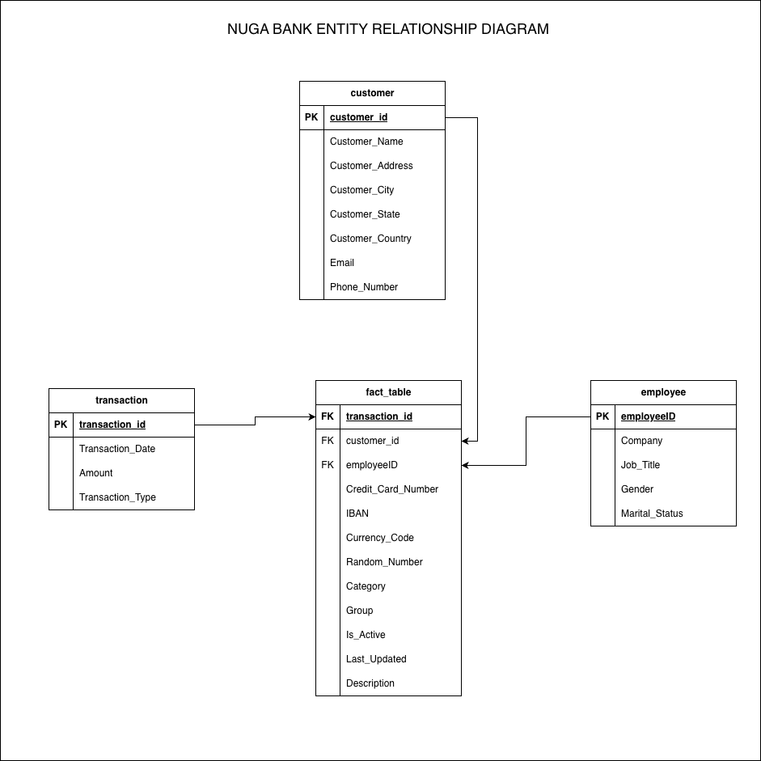

Incomplete descriptions
Missing descriptive values require consistent handling before the records can be trusted.
Banking · Data Engineering
An end-to-end PySpark ETL project that transforms roughly one million synthetic banking transactions into clean, dimensional datasets and analytics-ready PostgreSQL tables.
Project overview
Nuga Bank demonstrates how a large synthetic CSV can move through extraction, cleaning, transformation, dimensional modeling, multi-format export, and database loading. The result is a reusable foundation for transaction, customer, and operational analysis.
The challenge
The source combines transaction, customer, employee, payment, and descriptive fields in one large file. The pipeline separates concerns while preserving the links analysts need downstream.
Missing descriptive values require consistent handling before the records can be trusted.
Rows without a usable Last_Updated value are removed through an explicit quality rule.
Customer, employee, transaction, and payment attributes arrive together in the source CSV.
Surrogate identifiers are generated so modeled entities can be joined consistently.
PySpark provides a repeatable batch workflow suited to processing the high-volume dataset.
Parquet, CSV, and PostgreSQL outputs support notebooks, downstream jobs, and SQL analysis.
Data pipeline
Each stage has a clear responsibility, making the notebook easy to follow, reproduce, and adapt for a production-oriented implementation.
Read the synthetic transaction CSV into a Spark DataFrame.
Handle missing descriptions and remove records without a valid update timestamp.
Select, standardize, and separate transaction, customer, employee, and fact attributes.
Assign surrogate identifiers and preserve the relationships between dimensional datasets.
Write analytics-ready outputs in columnar Parquet and portable CSV formats.
Create the target database and load modeled tables into the nugabank PostgreSQL schema.
Query reusable tables for banking, customer, employee, and transaction analysis.
Data model
The model separates descriptive entities from the fact grain. Customers and employees receive generated identifiers, transactions retain their core measures, and the fact table connects them with additional banking attributes.
transactionsDate, amount, and typecustomersIdentity, location, and contact fieldsemployeesCompany, job, and demographic fieldsfact_tableKeys plus banking and descriptive attributes

Technology
Responsible use
This project is an educational portfolio demonstration. It does not contain real Nuga Bank customers, employees, payment instruments, or financial activity.
The generated records must not be used for financial, legal, credit, identity, or eligibility decisions. A real implementation would also require encryption, access controls, secret management, retention policies, and applicable privacy and financial-data safeguards.
Have a project in mind? I'd love to hear about it. Send me a message and let's discuss how we can turn your data challenges into opportunities.